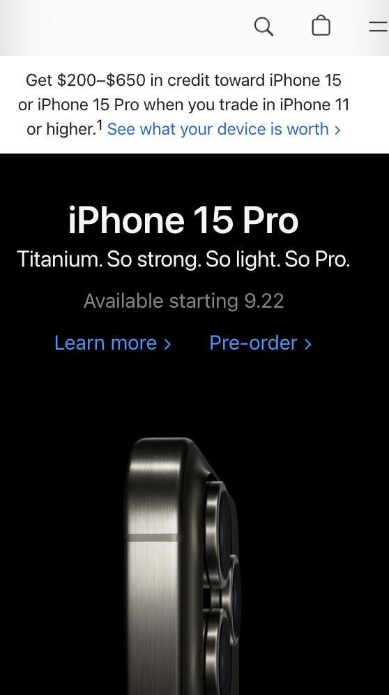

Visual Hierarchy
Visme
https://www.visme.coIt uses alignment and composition to create focal points and Consider reading patterns. Make users notice bigger elements more easily. Color and contrast draw the eye and white space creates emphasis. Proximity and repetition create unity.
Fitt's Law
Fitts's Law is the reason buttons on websites are large, and menus are usually located in the upper corners of your screen. Google puts its search field in the center of the screen and menu options in the upper corners. This utilizes magic pixels and likely prime pixels. The “Google Search” button is directly below the search input field, and the entire button is clickable, an example of a mental model. Right next to the “Google Search” button is “I’m Feeling Lucky,” a comparable button that’s grouped hierarchically.
White Space and Clean Design
Apple
https://www.apple.com Not only does whitespace give websites the simple, clean, minimalist look and feel that is so desirable in current design aesthetics but it also allows content to be more digestible and accessible to the user. Apple execute active whitespace throughout the website well by placing imagery strategically to draw the users eye to specific elements down the page.